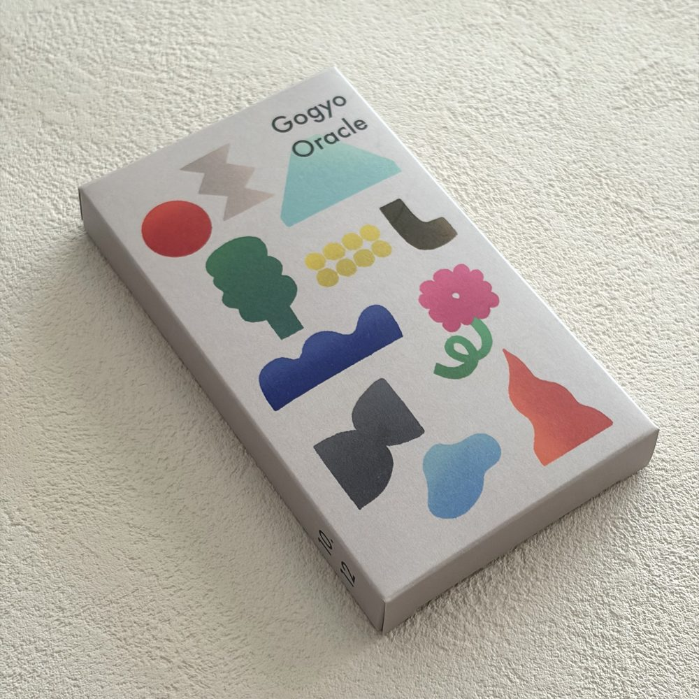
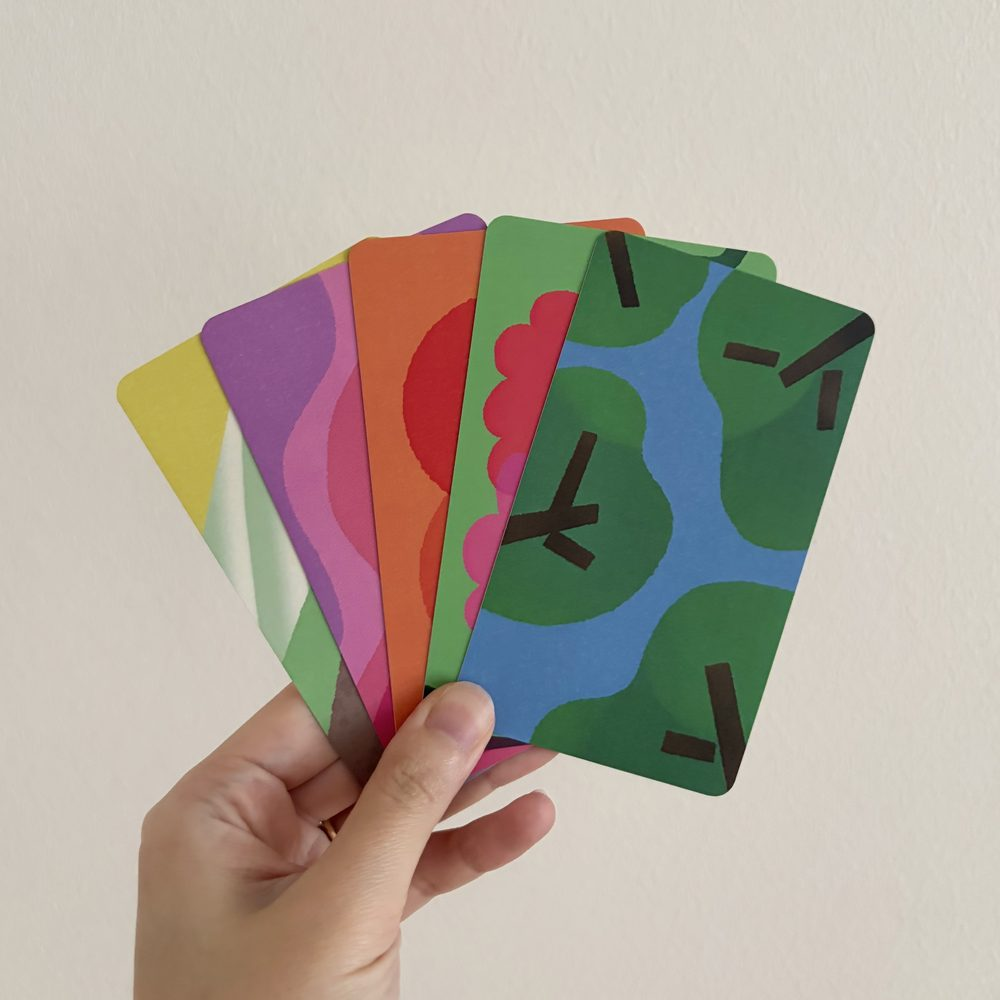
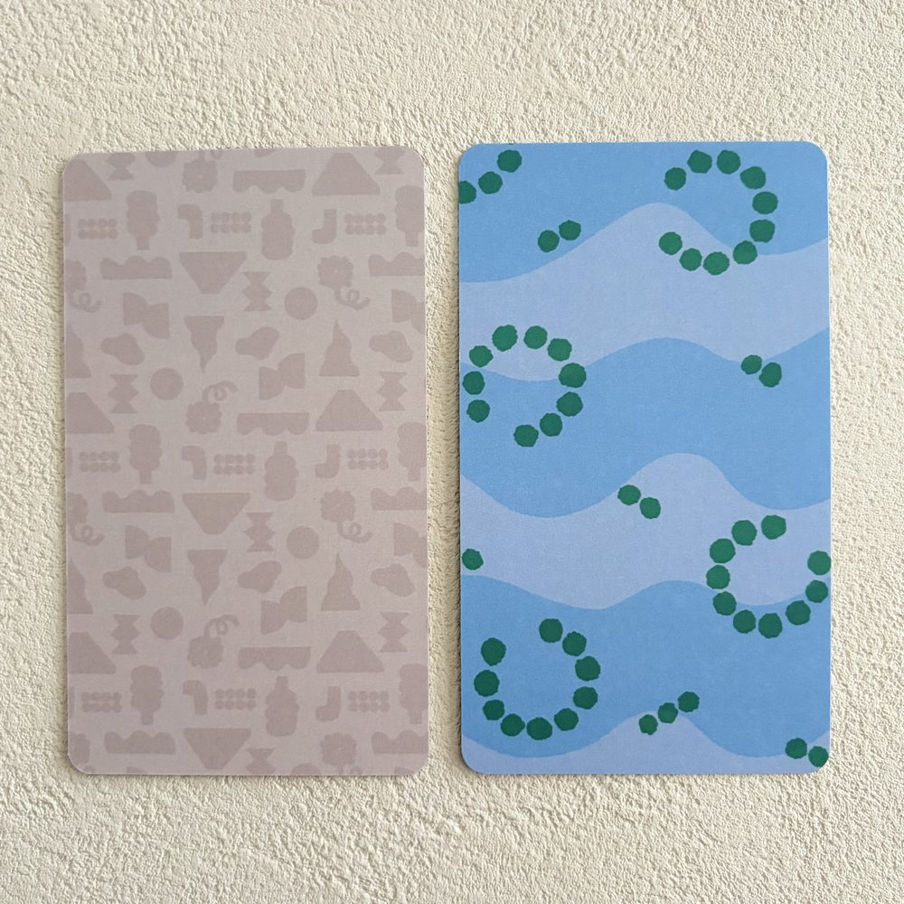

← トップにもどる
ユンスル四柱推命®作成のオラクルカード
Gogyo Oracle
〜十干・十二支〜
オラクルとは、神託のこと
神託は天からのお告げ
これらは、はっきりした言葉ではなく
「きざし」
として現れます
きざしを受け取るのは、知識ではなく、感覚
五行オラクルは、木・火・土・金・水の世界を
「感じ取る力」
を育てながら使っていく
四柱推命ベースのオラクルカードです
FEATURES
このカードの特徴
十干10枚＋十二支12枚、全22枚
正位置・逆位置を「とる読み方」と「とらない読み方」、2つの読み方が楽しめます
イラストレーターizuさんによる描き下ろしイラストのカード



SET
セット内容
オラクルカード（22枚・箱付き）
読み解きの解説書
使い方ガイド動画（12本）
ワークシート3種（ダウンロードしてお使いいただけます）
問いの例題
VIDEOS
使い方ガイド動画の内容
このカードでできること
占ってはいけないこと
引くための準備、保管方法など
五行とは
カードの説明・十干（正位置・逆位置あり）
カードの説明・十二支（正位置・逆位置あり）
カードの説明・十干（正位置・逆位置なし）
カードの説明・十二支（正位置・逆位置なし）
スプレッドのしかた
読み解きに詰まったら..
感性の磨き方
読み解きの実践
FOR YOU
こんな方におすすめ
オラクルカードを引いてみたい方
四柱推命を学んでいて、十干十二支を「感覚」で掴みたい方
四柱推命と組み合わせてカードを使えるようになりたい方
四柱推命の知識は不要です。カードから入って、五行の世界に触れる入口としてもお使いいただけます。
販売ページを見る